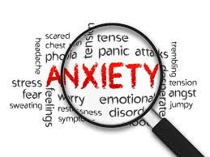

What is Anxiety
an emotion characterized by feelings of tension, worried thoughts and physical changes like increased blood pressure
Possible causes
- Environmental Stressors
Ex: difficulties at work, relationship problems, or family issues
- Genetics
people who have family members with an anxiety disorder are more likely to experience one themselves
- Medical Factors
such as the symptoms of a different disease, the effects of a medication, or the stress of an intensive surgery or prolonged recovery
- Brain Chemistry
many anxiety disorders as misalignments of hormones and electrical signals in the brain
- Withdrawal
Craving an illicit substance without a means to obtain it
Five Signs of Anxiety
- Excessive Worrying
- Feeling Agitated
- Restlessness
- Fatigue
- Difficulty concentrating
Possible treatments and self-help options
Treatmeants
- Combination of psychotherapy
- Behavioral therapy
- Medication
Self-help options
- Relaxation techniques
These techniques include meditation, deep breathing exercises, long baths, resting in the dark, and yoga
- Having a support network
Ex: Close relatives and family members etc.
- Exercise